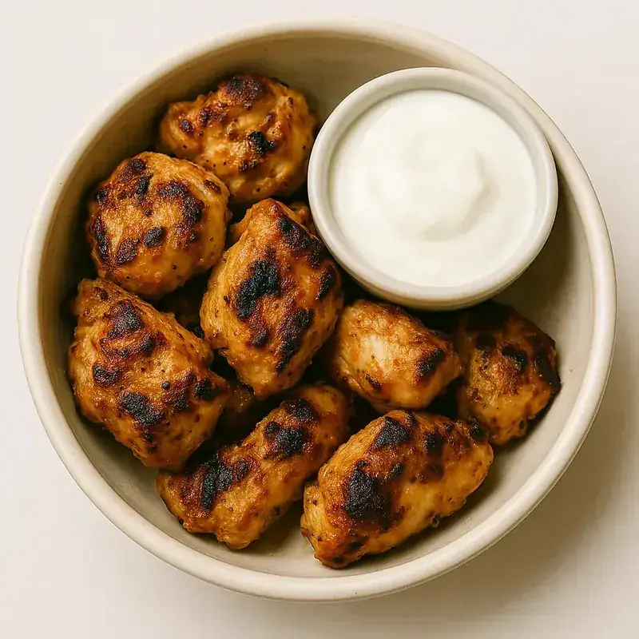
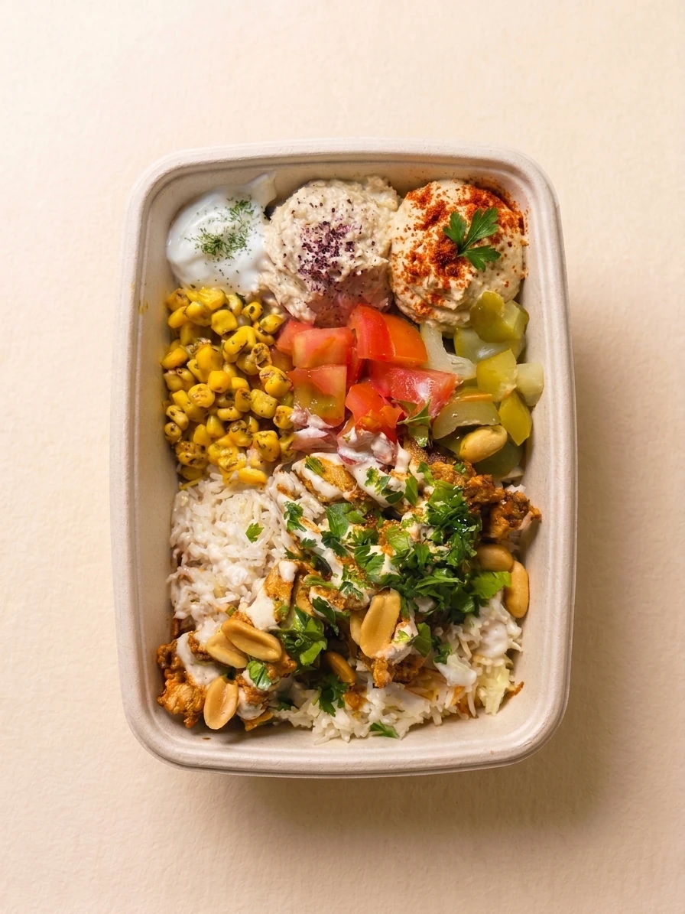
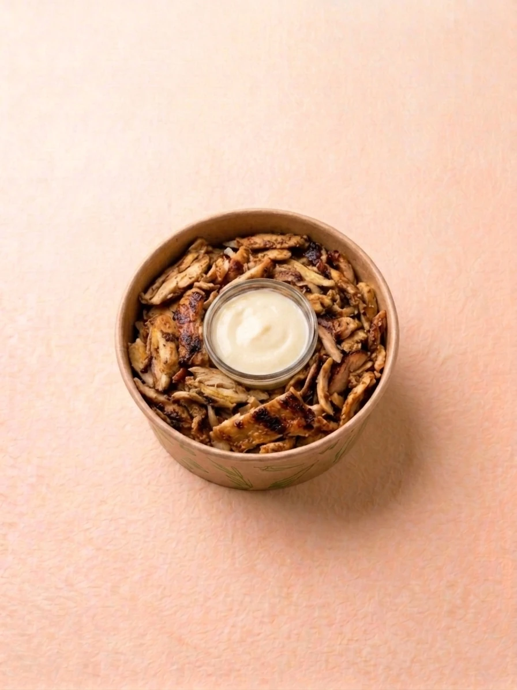
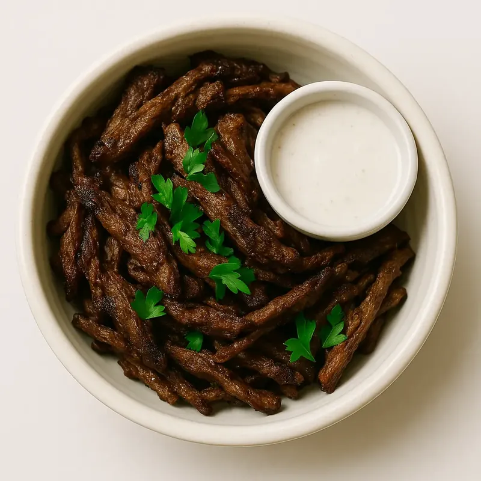

Viandes marinées aux épices du Levant, grillées au feu minute. Le taouk, le shawarma, la kafta — 100% halal et fait maison chez YallaEat à Vaise, Lyon 9.
Chez YallaEat, la grillade n’est pas un produit : c’est un savoir-faire. Chaque pièce est préparée selon la tradition levantine, de la marinade à la cuisson, sans compromis sur la qualité.

Chaque viande est marinée plusieurs heures avant service avec un mélange d’épices levantines authentiques : sumac, zaatar, cardamome, cumin, ail frais et citron pressé. Une marinade artisanale préparée maison chaque matin, qui imprègne la viande en profondeur pour un goût intense et parfumé.
Le taouk est grillé à la braise pour une caramélisation naturelle. Le shawarma tourne lentement à la broche verticale, laissant les jus s’écouler sur la viande. Chaque portion est découpée minute, garantissant une fraîcheur et une texture impossibles à obtenir avec une cuisson industrielle.
Vos grillades sont servies à la commande, accompagnées de pickles maison, toum (crème d’ail), houmous et crudités fraîches. Pas de plats réchauffés. La grillade sort du feu directement dans votre assiette ou votre bowl.
Quatre raisons de choisir YallaEat pour vos grillades libanaises à Lyon 9.
Le taouk est la grillade emblématique du Liban. Chez YallaEat, le poulet est mariné dans une base citron-ail-épices levantines pendant plusieurs heures, puis grillé jusqu’à une belle coloration dorée. Tendre à l’intérieur, légèrement caramélisé à l’extérieur.
Poulet ou boeuf, le shawarma est préparé à la broche verticale, découpé minute. Les couches de viande marinée se superposent, créant une texture unique : moelleuse au centre, croustillante en surface. Notre shawarma boeuf est assaisonné au sumac et à la cardamome.
La kafta est composée de viande hachée finement assaisonnée : boeuf ou agneau mélangé avec persil frais, oignon, cannelle, poivre de la Jamaïque et piment doux. Façonnée en brochettes et grillée au feu vif. Un goût riche et épicé, fidèle à la tradition levantine.
L’ensemble de nos grillades est préparé avec des viandes 100% halal certifiées, issues de fournisseurs traçables et contrôlés. Nos marinades, sauces et accompagnements sont faits maison chaque jour. Aucun produit industriel, aucun semi-préparé.
Choisissez votre format et composez votre repas sur mesure. Toutes nos protéines grillées sont disponibles en bowl, en wrap libanais ou en assiette avec accompagnements.

Taouk grillé, riz vermicelle, houmous maison, fattouch, pickles libanais, toum et sauce légère. Le bowl signature de YallaEat, généreux et équilibré.
12,90 €

Shawarma poulet à la broche, base riz ou salade, garnitures au choix, sauce tahini ou toum. Un classique libanais revisité en bowl sur mesure.
12,90 €

Shawarma boeuf au sumac et cardamome, riz vermicelle, garnitures fraîches et sauce spicy maison. Le choix des amateurs de saveurs profondes et épicées.
13,90 €
Taouk grillé, crudités fraîches (tomate, concombre, salade), toum ail, pickles maison, le tout roulé dans un pain libanais souple et légèrement grillé. Idéal pour emporter.
9,90 €
Portion de shawarma poulet avec crème de toum ail maison. Le mezzé parfait pour accompagner un bowl ou goûter nos grillades à la pièce. Simple, efficace, irrésistible.
6,90 €
Nous proposons du taouk (poulet mariné citron-ail), du shawarma poulet et boeuf (viande à la broche), et de la kafta (viande hachée aux épices du Levant). Toutes nos protéines sont marinées maison chaque jour, sans produit industriel ni surgelé.
Oui, 100% halal certifié pour toutes nos viandes. Le poulet, le boeuf et la kafta proviennent de fournisseurs certifiés halal et traçables. Aucune viande non-halal n’entre dans notre cuisine. Vous mangez en toute confiance, à chaque bouchée.
Oui, toutes nos protéines grillées sont disponibles en bowl sur mesure, en wrap ou en assiette. Vous composez votre bowl avec la base de votre choix (riz, salade, couscous), vos garnitures et vos sauces. Disponible sur place et en click & collect au 29 Rue de Bourgogne, Lyon 9.
Nos grillades utilisent des épices levantines authentiques (sumac, zaatar, cardamome) et des marinades artisanales préparées maison. La viande est grillée entière, jamais pressée ni reconstituée. Une différence que vous sentez dès la première bouchée : texture naturelle, arômes profonds, sans additif.
Composez votre bowl sur mesure avec nos grillades, bases et garnitures libanaises.
📋Découvrez toute la carte YallaEat : bowls, wraps, mezzés, desserts et boissons.
✅Tout savoir sur notre démarche halal : fournisseurs, certifications, traçabilité.